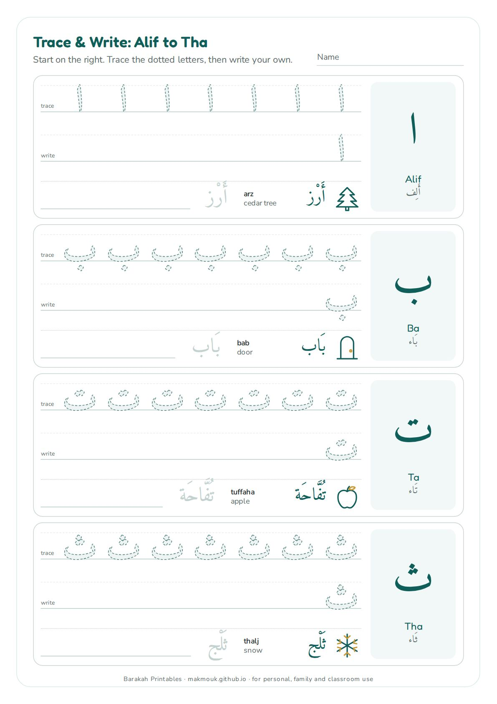
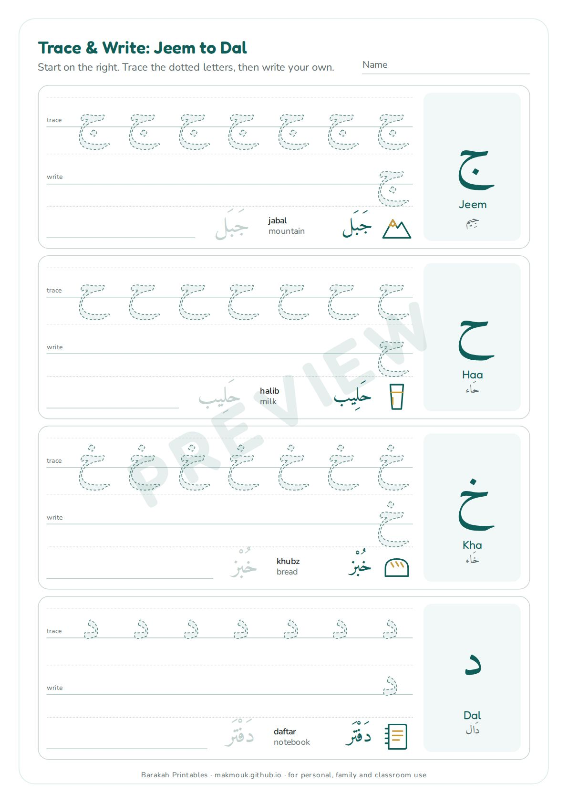
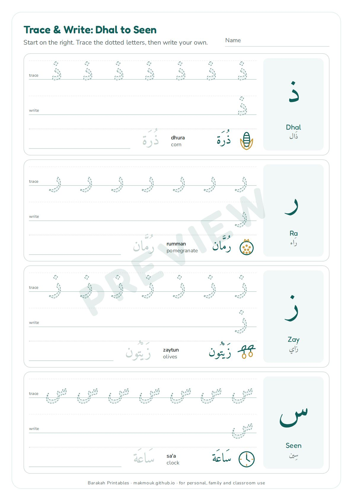
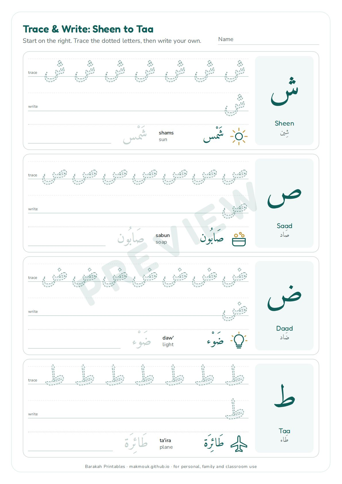
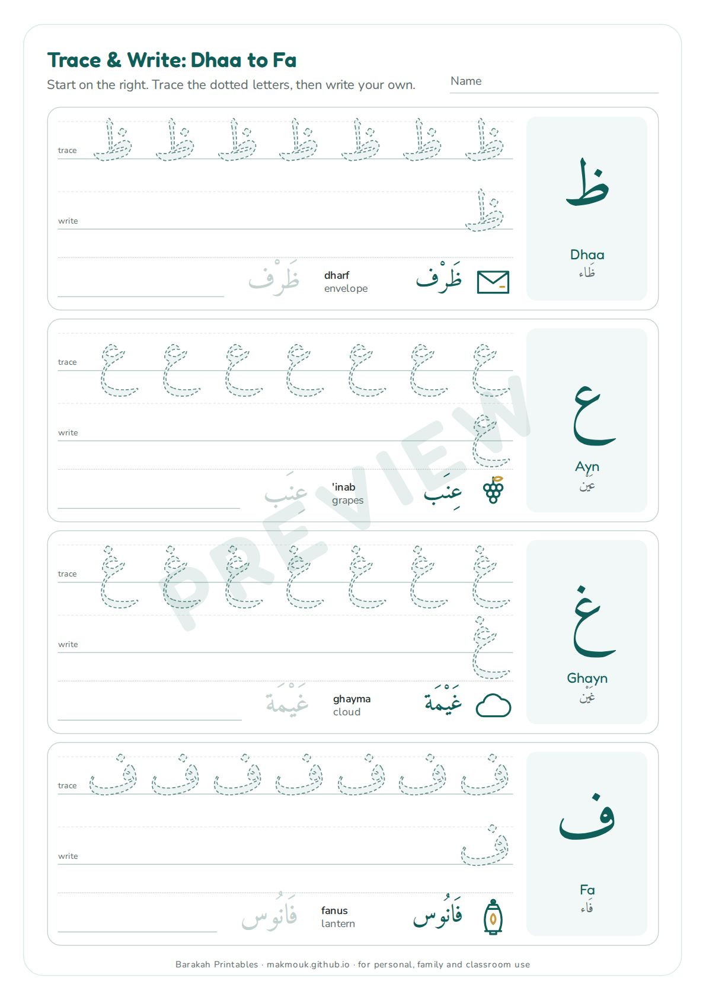
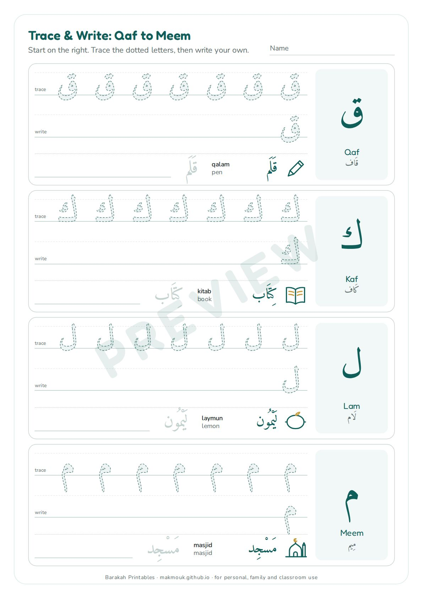
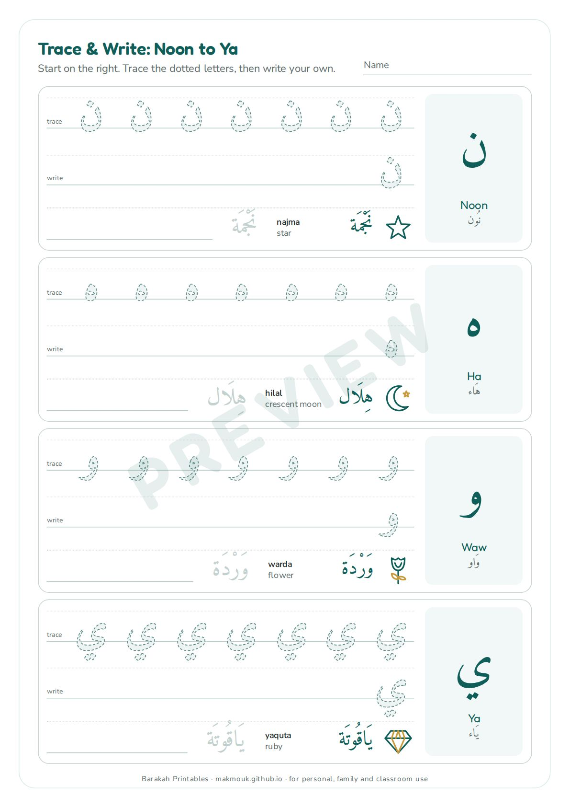
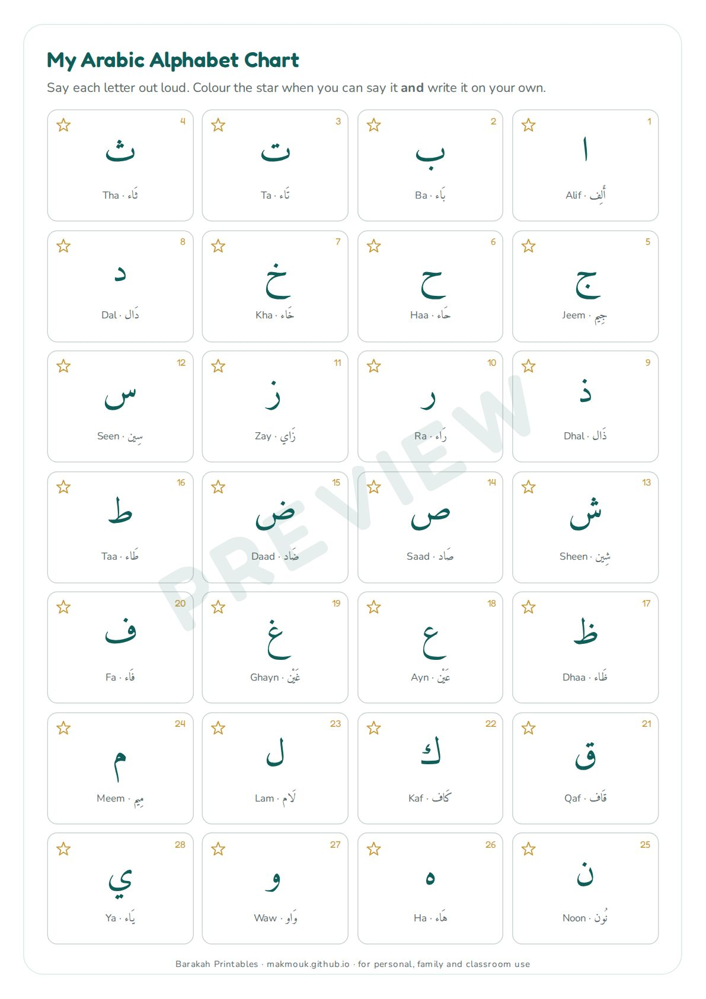
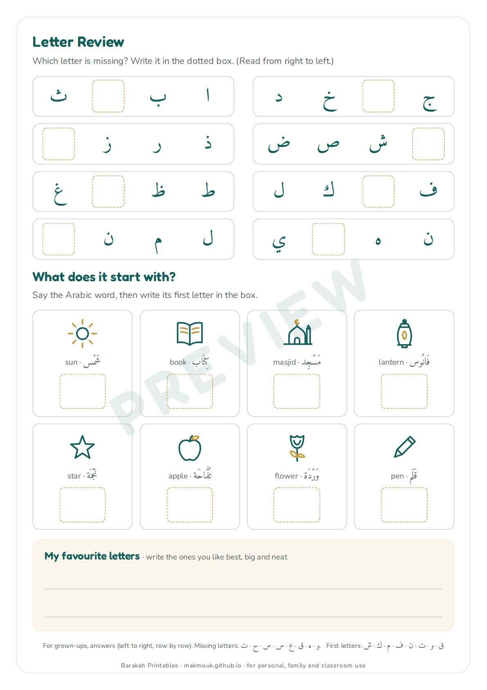
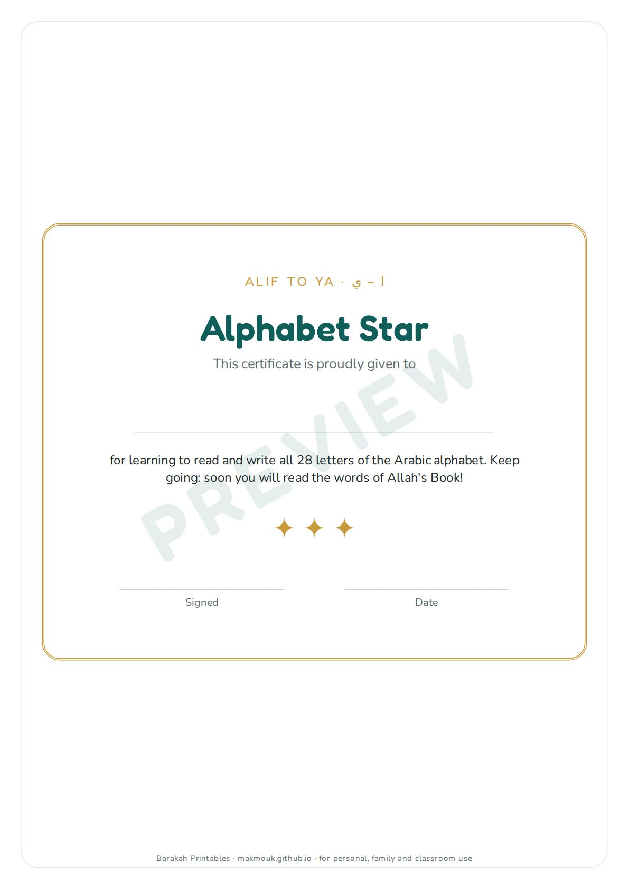

Arabic for Kids · Printable
Arabic Alphabet Tracing Worksheets
All 28 letters: trace, write and learn a word for each
Gentle Arabic handwriting practice for children aged 3-7 who are starting to learn the alphabet. Every one of the 28 letters gets a large model letter with its name, a row of dotted letters to trace, a row to write on their own, and a simple word with a picture (sun, book, lantern, masjid…) to trace too. It ends with an alphabet chart to colour, a missing-letter review page and a certificate. Print one page a day; there are no people or faces drawn.
- 11 A4 pages, prints on US Letter too
- Ages 3-7
- Ink-friendly, no faces, no music
The full 11-page version is in the All-Access Library, with every other printable on this site.